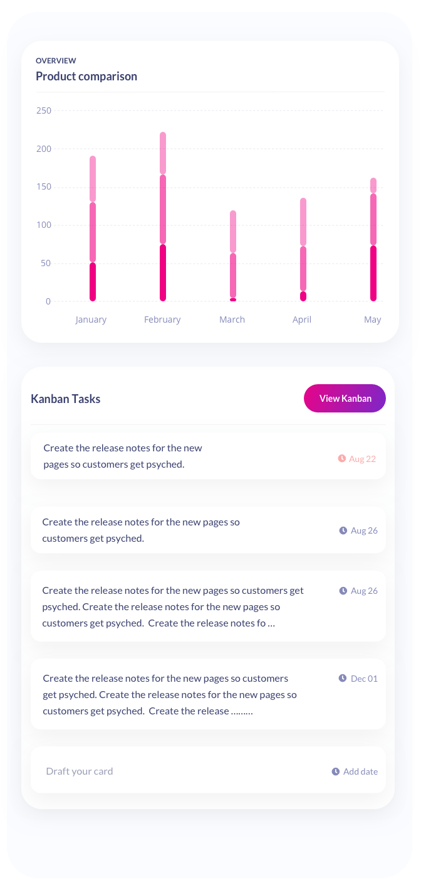
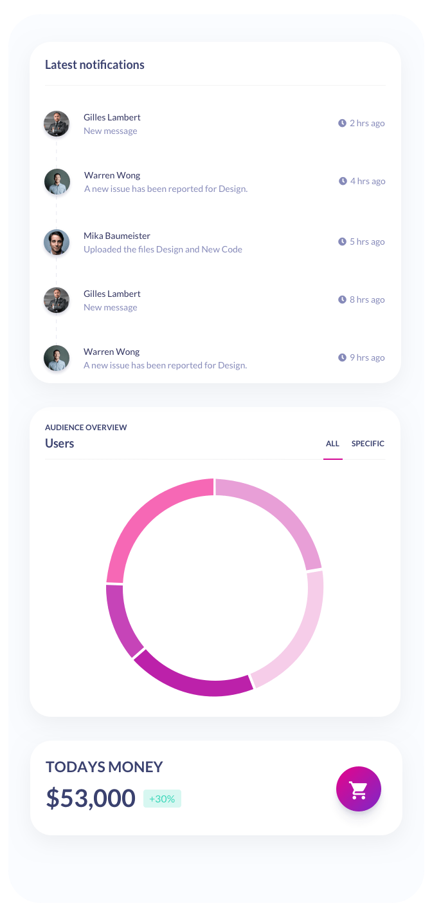
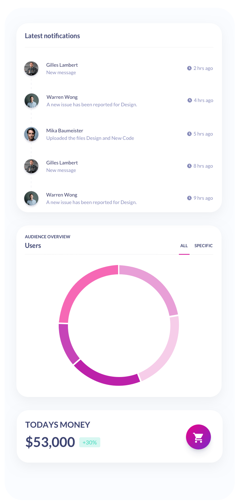
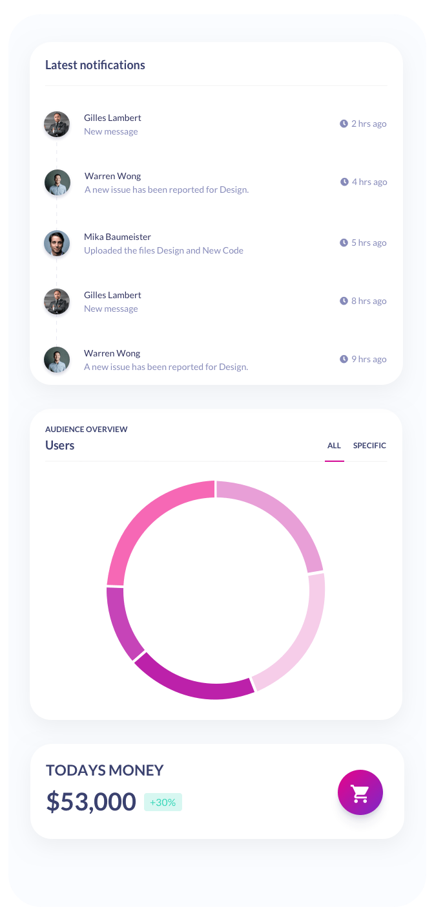

Leveraging AI for Amplified SEO Insights
Background
Contentoo, recognized as Europe's premier content creation platform , bridges the gap between freelance content writers and clients seeking high-quality, SEO-optimized content. In the digital age, where content is king, the ability to stay ahead in search engine rankings is crucial for attracting traffic and engaging audiences. Contentoo sought to enhance its platform's value by providing clients with cutting-edge tools to identify and capitalize on emerging SEO trends .Challenge
The dynamic nature of SEO requires constant vigilance and adaptation to stay ahead of the curve. Contentoo faced the challenge of equipping its clients with real-time, actionable SEO insights to inform their content strategy. Traditional methods of keyword research and trend monitoring were time-consuming and often lagged behind rapidly changing search engine algorithms and user search behaviors. There was a clear need for an automated solution.
Solution
Entropical developed an AI-driven tool tailored for
Contentoo's unique needs. This advanced solution automates the
collection of relevant SEO keywords, continuously monitors
these and related keywords, and provides
periodic suggestions for new content topics
. The tool leverages machine learning algorithms to analyze
search engine data, identifying
emerging trends
and shifts in
user interest patterns
. This enables Contentoo's clients to produce content that is
not only relevant and engaging but also
optimized for search engine visibility
.
Conclusion
Entropical's custom AI solution has positioned Contentoo at the forefront of content marketing technology , offering unparalleled value to its clients. This case study highlights the transformative potential of AI in the content creation industry, showcasing how automated tools can drive traffic and engagement through strategic, data-driven content decisions . By leveraging AI to tap into SEO trends, Contentoo not only enhances its platform's appeal to freelance writers and clients but also solidifies its status as a leader in the European content creation market.
Nice to meet you! I'm Kjeld.
Born and raised in Amsterdam, now living in Valencia
(Spain). I've been programming since I was nine years old,
and shifted my focus towards AI around 10 years ago.
Having experience in both technical and business-oriented roles, my expertise lies in seamlessly bridging the gap between business objectives and technical execution.
Having experience in both technical and business-oriented roles, my expertise lies in seamlessly bridging the gap between business objectives and technical execution.
 Kjeld Oostra
Kjeld Oostra
AI Solutions Architect & Strategic Advisor


 

